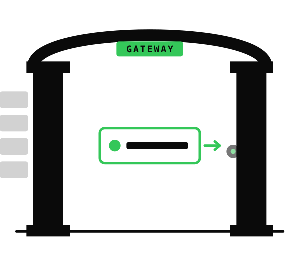

1
No access by default
The agent sees no tabs until you explicitly share one from the extension popup.
Share the tab you choose with an AI coding agent. Nothing else is visible by default, and every local operation is designed to stay inspectable.

The current macOS distribution is a notarized DMG for Apple Silicon Macs. It
includes the menu bar app, the abg CLI, and the bundled agent skill
installer.
/Applications and starts after setup.
abg and its resource bundle under /usr/local/bin.
abg install-skill for Claude Code and Codex.
SHA-256
ae36464ef12a55e677e48526a1b83e2ebc7ac8182064671bfbcb3d5934bb2a47
Browser access is powerful for AI agents because the real work often happens inside pages you are already logged into. That same power becomes risky when the bridge is opaque, global, or tied to a single hosted assistant.
If your AI can see your browser, you should be able to inspect the bridge it uses.
No tab is shared until you choose it, and sharing is scoped to that tab.
The CLI can be used by Codex, Claude Code, Cursor, Cline, or your own scripts.
ABG is local-first, avoids product telemetry, and records operations in a local audit log.
ABG is built for the moment when you are already looking at the real page and want to hand only that page to a local agent workflow.
The agent sees no tabs until you explicitly share one from the extension popup.
ABG keeps permission scoped to the selected tab instead of exposing the browser.
Access is revoked when the tab closes, navigates to another origin, or you revoke it.
Write actions can require a local approval step before they run.
Agent Browser Gateway combines a Chrome extension, a macOS menu bar gateway, and
the abg CLI. The extension has no host permissions, the gateway listens
on 127.0.0.1, and the product does not include analytics or telemetry.
You choose the active tab from the extension popup.
Your agent asks abg for reads, screenshots, console logs, tables, or operations.
Local operation records are written to a JSONL audit log on your Mac.
Raw browser HTML is noisy: scripts, styles, framework wrappers, hidden UI, and unrelated app chrome all get mixed into the prompt. ABG can return clean Markdown from the shared tab, preserving useful structure while cutting out the page noise.
In a README benchmark on a typical article page, ABG's Markdown read reduced input from roughly 50,000 tokens of raw HTML to roughly 5,900 tokens while keeping headings, links, lists, and article structure.
ABG is for handing a human-owned, already-open tab to an agent workflow. Playwright remains the better fit when automation should own the whole browser lifecycle.
| Option | Best fit | Tradeoff | Where ABG differs |
|---|---|---|---|
| Agent Browser Gateway | AI-assisted work in a tab you are already using | Requires explicit local setup and tab sharing | Per-tab consent, local transport, CLI-first workflow, local audit log |
| Playwright | Deterministic E2E tests, CI, screenshots, clean browser profiles | Automation owns the browser session | ABG uses your everyday Chrome tab with your current login and context |
| Claude in Chrome | Provider-integrated browser assistance | Tied to that provider's product surface and data path | ABG is agent-agnostic and designed around local-first browser access |
| Browser MCP tools | MCP-native browser control and structured snapshots | Often targets a dedicated or broader browser context | ABG keeps the human's selected tab as the permission boundary |